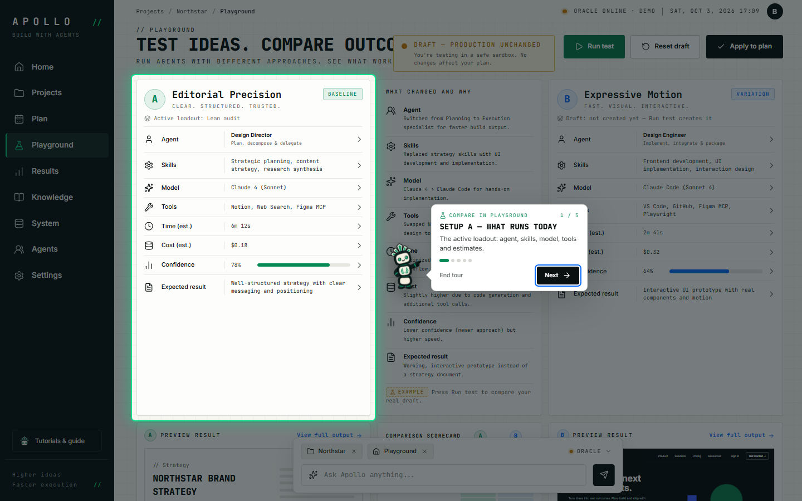
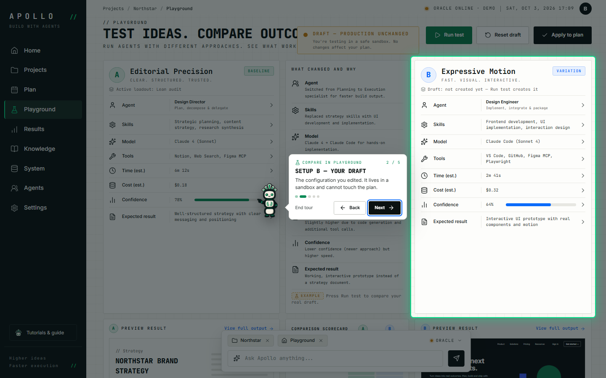
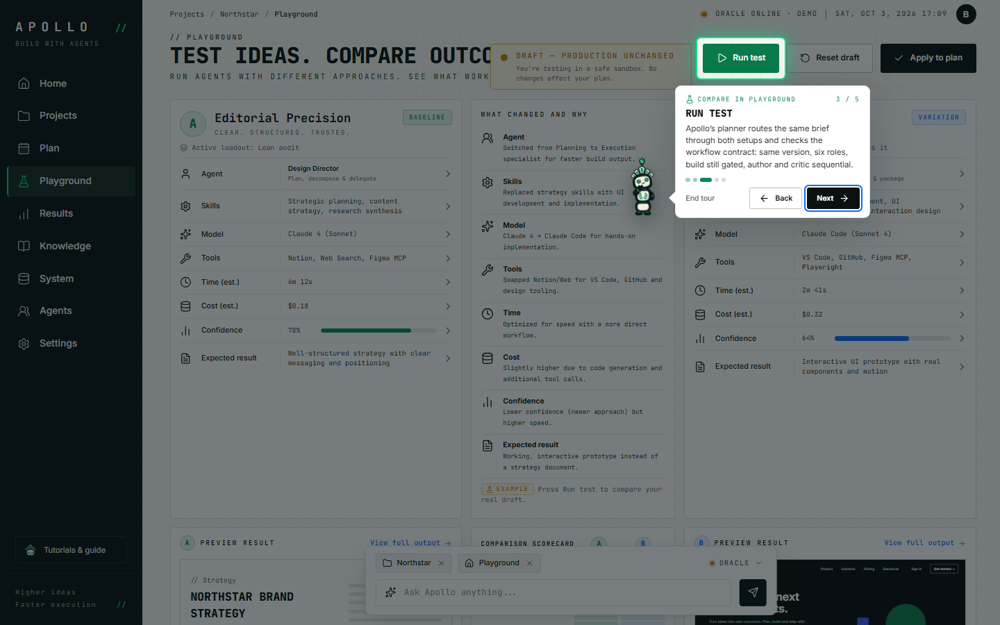
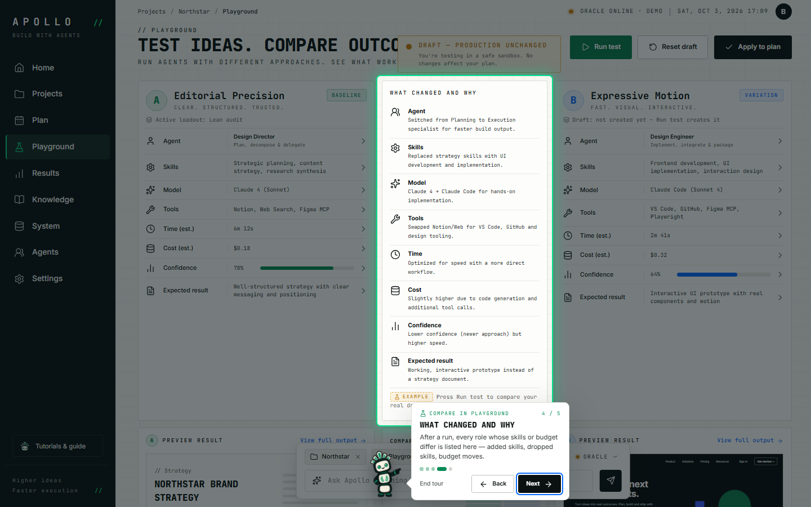
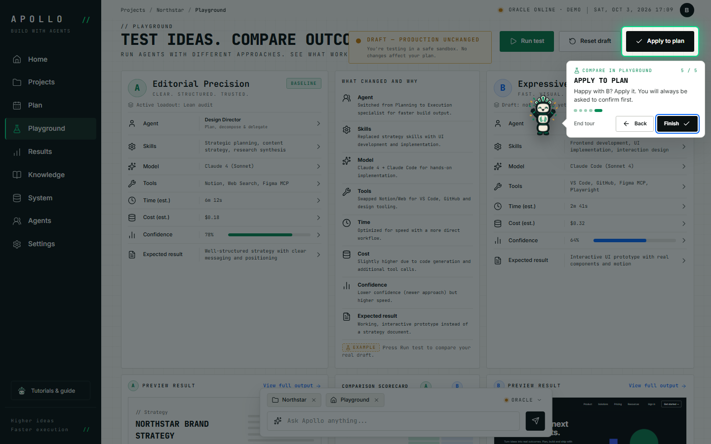

Recorded automatically with Playwright on a scratch copy of the data.
- 01

Setup A — what runs today
The active loadout: agent, skills, model, tools and estimates.
Screen:
#/playground
- 02

Setup B — your draft
The configuration you edited. It lives in a sandbox and cannot touch the plan.
Screen:
#/playground
- 03

Run test
Apollo’s planner routes the same brief through both setups and checks the workflow contract: same version, six roles, build still gated, author and critic sequential.
Screen:
#/playground
- 04
What changed and why
After a run, every role whose skills or budget differ is listed here — added skills, dropped skills, budget moves.
Screen:
#/playground
- 05

Apply to plan
Happy with B? Apply it. You will always be asked to confirm first.
Screen:
#/playground